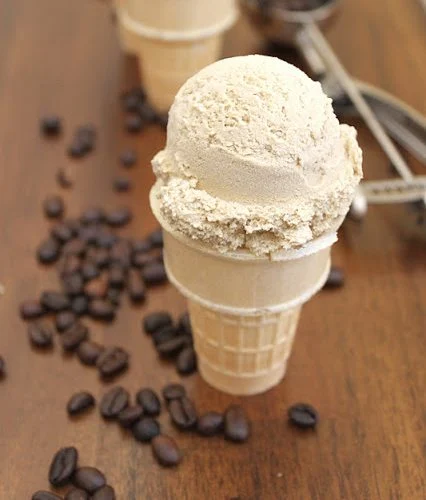

Coffee icecream

Sound's delicious right?
This is a little bit complex recipe, but if you love coffee it
won't be a sacrifice right ? Let's start!
Ingredients
- 1 1/2 cups of whole milk
- 3/4 cups of sugar
- 1 1/2 cups of whole coffee beans (decaf only if you don't want caffeine)
- Pinch salt
- 1 1/2 cups of heavy cream divided
- 5 large egg yolks
- 1/4 teaspoon vanilla extract
- 1/4 teaspoon finely ground coffee
Preparation
- Steep the milk with the sugar, coffee beans, salt, and cream:
Heat the milk, sugar, whole coffee beans, salt, and 1/2 cup of the cream in a
medium saucepan until it is quite warm and steamy, but not boiling.
Once the mixture is warm, cover, remove from the heat, and let steep at room temperature for 1 hour.
- Set the remaining cream into a bowl over an ice bath with a sieve:
Pour the remaining 1 cup of cream into a medium metal bowl and set it in a large bowl full of ice.
Set a mesh strainer on top of the bowls. Set aside.
- Temper the egg yolks:
Reheat the milk and coffee mixture on medium heat until it's hot and steamy again (not boiling!).
In a separate bowl, whisk the egg yolks together. Slowly pour the heated milk and coffee mixture into the egg yolks,
whisking constantly so that the egg yolks are tempered by the warm milk, but not cooked by it. Scrape the warmed egg
yolks back into the saucepan.
- Heat egg milk coffee mixture until it thickens:
Stir the custard mixture constantly over medium heat with a heatproof, flat-bottomed spatula, scraping the bottom as you stir,
until the mixture thickens and coats the spatula so that you can run your finger across the coating and have the coating not run.
This can take about 10 minutes.
- Strain the custard:
Pour the custard through the strainer and stir it into the cream that's set over ice. Press on the coffee beans in the strainer
to extract as much of the coffee flavor as possible. Then discard the beans. Mix in the vanilla and finely ground coffee, and stir until cool.
- Chill and process in ice cream maker:
Chill the mixture thoroughly in the refrigerator, then freeze it in your ice cream maker according to the manufacturer's instructions.
Sound a little hard? Don't worry it worths the sacrifice ! Try it !
Home